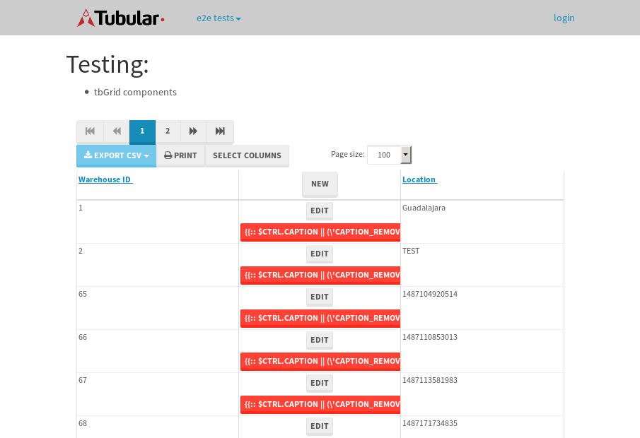

tbColumn.Grid Sorting - 29.233sTests: 5Skipped: 0Failures: 0 should sort data in ascending order then on descending order when sorting by Order Id column - 6.312sTests passed: 100.00%should order data in ascending order when click-sorting an unsorted text column - 5.534sTests passed: 100.00%should order data in descending order when click-sorting an ascending-sorted text column - 6sTests passed: 100.00%should order data in ascending order when click-sorting an unsorted date column - 5.692sTests passed: 100.00%should order data in descending order when click-sorting twice an unsorted date column - 5.692sTests passed: 100.00%
tbEmptyForm - 3.627sTests: 3Skipped: 0Failures: 1 should have an empty required field - 0.879sTests passed: 100.00%should not be able to click on save - 0.521sExpected null not to be null null.✗Tests passed: 50.00%should load default value for numeric field - 0.538sTests passed: 100.00%
Tubular Filters.tbColumnFilter - 110.938sTests: 12Skipped: 0Failures: 0 should cancel filtering when clicking outside filter-popover - 9.197sTests passed: 100.00%should disable Value text-input for "None" filter - 6.814sTests passed: 100.00%should disable apply button for "None" filter - 6.868sTests passed: 100.00%should decorate popover button when showing data is being filtered for its column - 12.125sTests passed: 100.00%should correctly filter data for the "Equals" filtering option - 8.277sTests passed: 100.00%should correctly filter data for the "Not Equals" filtering option - 8.526sTests passed: 100.00%should correctly filter data for the "Contains" filtering option - 8.796sTests passed: 100.00%should correctly filter data for the "Not Contains" filtering option - 8.559sTests passed: 100.00%should correctly filter data for the "Starts With" filtering option - 7.401sTests passed: 100.00%should correctly filter data for the "Not Starts With" filtering option - 8.896sTests passed: 100.00%should correctly filter data for the "Ends With" filtering option - 7.006sTests passed: 100.00%should correctly filter data for the "Not Ends With" filtering option - 7.144sTests passed: 100.00%
Tubular Filters.tbColumnDateTimeFilter - 138.271sTests: 12Skipped: 0Failures: 0 should cancel filtering when clicking outside filter-popover - 7.879sTests passed: 100.00%should disable Value text-input for "None" filter - 6.587sTests passed: 100.00%should disable apply button for "None" filter - 6.843sTests passed: 100.00%should clear filtering when clicking on Clean button - 17.998sTests passed: 100.00%should decorate popover button when showing data is being filtered for its column - 12.004sTests passed: 100.00%should correctly filter data for the "Equals" filtering option - 7.02sTests passed: 100.00%should correctly filter data for the "Not Equals" filtering option - 7.202sTests passed: 100.00%should correctly filter data for the "Between" filtering option - 12.595sTests passed: 100.00%should correctly filter data for the "Greater-or-equal" filtering option - 12.322sTests passed: 100.00%should corretlly filter data for the "Greater" filtering option - 12.301sTests passed: 100.00%should correctly filter data for the "Less-or-equal" filtering option - 13.033sTests passed: 100.00%should correctly filter data for the "Less" filtering option - 11.73sTests passed: 100.00%
Tubular Filters.tbColumnOptionsFilter - 82.229sTests: 3Skipped: 0Failures: 0 should cancel filtering when clicking outside filter-popover - 9.37sTests passed: 100.00%should decorate popover button when showing data is being filtered for its column - 12.121sTests passed: 100.00%should filter column-elements in accordance to the selected filter when selecting a single option - 49.819sTests passed: 100.00%
Tubular Filters.tbTextSearch - 50.266sTests: 5Skipped: 0Failures: 0 min-chars is not set - 1.083sTests passed: 100.00%should filter data in searchable-column customer name to matching inputted text, starting from 3 characters - 7.455sTests passed: 100.00%should filter data in searchable-column shipper city to matching inputted text, starting from 3 characters - 12.399sTests passed: 100.00%should show clear button when there is inputted text only - 6.664sTests passed: 100.00%should clear filtering when clicking clear button - 16.565sTests passed: 100.00%
tbForm related components.tbCheckboxField - 6.971sTests: 2Skipped: 0Failures: 0 should save changes on "SAVE" - 3.028sTests passed: 100.00%should discard changes on "CANCEL" - 2.483sTests passed: 100.00%
tbForm related components.tbDropDownEditor - 12.341sTests: 5Skipped: 0Failures: 0 should set initial input value to the value of "value" attribute when defined - 1.807sTests passed: 100.00%should show the component name value in a label field when "showLabel" attribute is true - 2.104sTests passed: 100.00%should show a help field equal to this attribute, is present - 2.334sTests passed: 100.00%should submit modifications to item/server when clicking form "Save" - 3.171sTests passed: 100.00%should NOT submit modifications to item/server when clicking form "Cancel" - 2.24sTests passed: 100.00%
tbForm related components.tbTextArea - 15.352sTests: 7Skipped: 0Failures: 0 should set initial input value to the value of "value" attribute when defined - 1.669sTests passed: 100.00%should be invalidated when the number of chars is not in the range of "min" and "max" attributes - 2.437sTests passed: 100.00%should show the component name value in a label field when "showLabel" attribute is true - 1.757sTests passed: 100.00%should show a help field equal to this attribute, is present - 1.621sTests passed: 100.00%should require the field when the attribute "required" is true - 1.786sTests passed: 100.00%should submit modifications to item/server when clicking form "Save" - 3.04sTests passed: 100.00%should NOT submit modifications to item/server when clicking form "Cancel" - 2.363sTests passed: 100.00%
tbForm related components.tbDateEditor - 15.287sTests: 6Skipped: 0Failures: 0 should set initial date value to the value of "value" attribute when defined - 1.755sTests passed: 100.00%should be invalidated when the date is not in the range of "min" and "max" attributes - 2.298sTests passed: 100.00%should show the component name value in a label field when "showLabel" attribute is true - 2.632sTests passed: 100.00%should show a help field equal to this attribute, is present - 1.979sTests passed: 100.00%should submit modifications to item/server when clicking form "Save" - 3.117sTests passed: 100.00%should NOT submit modifications to item/server when clicking form "Cancel" - 2.728sTests passed: 100.00%
tbForm related components.tbTypeaheadEditor - 17.738sTests: 7Skipped: 0Failures: 0 should show an options list when there is an API-info/component entered-data - 2.704sTests passed: 100.00%should select the option clicked - 2.079sTests passed: 100.00%should show a "delete" button when an option/match is selected, and delete the option if button is clicked - 2.541sTests passed: 100.00%should show a label value equal to the component name when "showLabel" attribue is true - 1.745sTests passed: 100.00%should require a value when "require" attribute is true - 2.192sTests passed: 100.00%should submit modifications to item/server when clicking form "Save" - 3.903sTests passed: 100.00%should NOT submit modifications to item/server when clicking form "Cancel" - 1.825sTests passed: 100.00%
tbForm related components.tbSimpleEditor - 22.243sTests: 9Skipped: 0Failures: 0 should set initial input value to the value of "value" attribute when defined - 1.714sTests passed: 100.00%should be invalidated when the number of chars is not in the range of "min" and "max" attributes - 3.263sTests passed: 100.00%should show the component name value in a label field when "showLabel" attribute is true - 1.8sTests passed: 100.00%should set input placeholder to the value of "placeholder" attribute - 1.942sTests passed: 100.00%should validate the control using the "regex" attribute, if present - 2.34sTests passed: 100.00%should show a help field equal to this attribute, is present - 2.969sTests passed: 100.00%should require the field when the attribute "required" is true - 2.073sTests passed: 100.00%should submit modifications to item/server when clicking form "Save" - 3.066sTests passed: 100.00%should NOT submit modifications to item/server when clicking form "Cancel" - 2.427sTests passed: 100.00%
tbForm related components.tbNumericEditor - 17.509sTests: 7Skipped: 0Failures: 0 should set initial component value to the value of "value" attribute when defined - 1.797sTests passed: 100.00%should be invalidated when the entered number is not in the range of "min" and "max" attributes - 2.286sTests passed: 100.00%should show the component name value in a label field when "showLabel" attribute is true - 1.743sTests passed: 100.00%should show a help field equal to this attribute, is present - 2.397sTests passed: 100.00%should require the field when the attribute "required" is true - 2.013sTests passed: 100.00%should submit modifications to item/server when clicking form "Save" - 3.255sTests passed: 100.00%should NOT submit modifications to item/server when clicking form "Cancel" - 2.711sTests passed: 100.00%
tbForm Connection Error NoModelKey - 2.466sTests: 1Skipped: 0Failures: 0 tbForm connection error functionality - 0.449sTests passed: 100.00%
tbForm Connection Error NoServerUrl - 2.598sTests: 1Skipped: 0Failures: 0 tbForm connection error functionality - 0.53sTests passed: 100.00%
tbGridComponents - 15.919sTests: 6Skipped: 0Failures: 2 should add item with newRow method - 4.883sTests passed: 100.00%should add item with newRow method and cancel action - 0.93sTests passed: 100.00%should update item with tbSaveButton - 3.237sTests passed: 100.00%should NOT update item on cancel Update action - 2.217sTests passed: 100.00%should remove item with tbRemoveButton - 1.3sFailed: No element found using locator: By(css selector, div.popover)✗Tests passed: 0.00%should NOT remove item on cancel Remove action - 0.887sFailed: No element found using locator: By(css selector, div.popover)✗Tests passed: 0.00%
tbGridPager.navigation buttons - 9.967sTests: 1Skipped: 0Failures: 0 should perform no action when clicking on the numbered navigation button corresponding to the current-showing results page - 1.486sTests passed: 100.00%
tbGridPager.navigation buttons.first/non-last results page related functionallity - 4.152sTests: 2Skipped: 0Failures: 0 should disable "first" and "previous" navigation buttons when in first results page - 1.753sTests passed: 100.00%should enable "last" and "next" navigation buttons when in a results page other than last - 2.398sTests passed: 100.00%
tbGridPager.navigation buttons.last/non-first results page related functionallity - 4.329sTests: 2Skipped: 0Failures: 0 should disable "last" and "next" navigation buttons when in last results page - 2.034sTests passed: 100.00%should enable "first" and "previous" navigation buttons when in a results page other than first - 2.295sTests passed: 100.00%
tbGridPager.page navigation - 7.996sTests: 5Skipped: 0Failures: 0 should go to next results page when clicking on next navigation button - 1.443sTests passed: 100.00%should go to previous results page when clicking on previous navigation button - 1.961sTests passed: 100.00%should go to last results page when clicking on last navigation button - 1.859sTests passed: 100.00%should go to first results page when clicking on first navigation button - 1.408sTests passed: 100.00%should go to corresponding results page when clicking on a numbered navigation button - 1.325sTests passed: 100.00%
tbGridPagerInfo - 4.657sTests: 2Skipped: 0Failures: 0 should show text in accordance to numbered of filter rows and current results-page - 1.591sTests passed: 100.00%should show count in footer - 0.672sTests passed: 100.00%
tbHttp - 18.35sTests: 8Skipped: 1Failures: 1 should be authenticated - 2.812sTests passed: 100.00%retrieve data - 2.456sTests passed: 100.00%should not login bad credentials - 2.775sExpected '' to be 'false'.✗Tests passed: 0.00%should have a refresh token - 2.461sTests passed: 100.00%should remove authentication - 2.65sTests passed: 100.00%get method-Is not authenticated - 2.807sTests passed: 100.00%post method-Is not authenticated - 2.387sTests passed: 100.00%should regenerate access token on post - 0s***Skipped***Tests passed: 0%
tbPageSizeSelctor - 12.587sTests: 4Skipped: 0Failures: 0 should filter up to 10 data rows per page when selecting a page size of "10" - 2.793sTests passed: 100.00%should filter up to 20 data rows per page when selecting a page size of "20" - 2.476sTests passed: 100.00%should filter up to 50 data rows per page when selecting a page size of "50" - 3sTests passed: 100.00%should filter up to 100 data rows per page when selecting a page size of "100" - 2.841sTests passed: 100.00%
tbRowSelectable - 11.014sTests: 2Skipped: 0Failures: 0 selected rows - 4.862sTests passed: 100.00%unselected rows - 4.128sTests passed: 100.00%
tbSingleForm - 21.047sTests: 8Skipped: 1Failures: 0 should load correct info - 0s***Skipped***Tests passed: 0%should change customer name - 2.378sTests passed: 100.00%should save it - 3.438sTests passed: 100.00%should clear the inputs - 2.641sTests passed: 100.00%should update - 3.174sTests passed: 100.00%should reset editor - 2.362sTests passed: 100.00%should not save if not Changes - 2.508sTests passed: 100.00%should not be able to click on save - 4.546sTests passed: 100.00%


{kind=link}